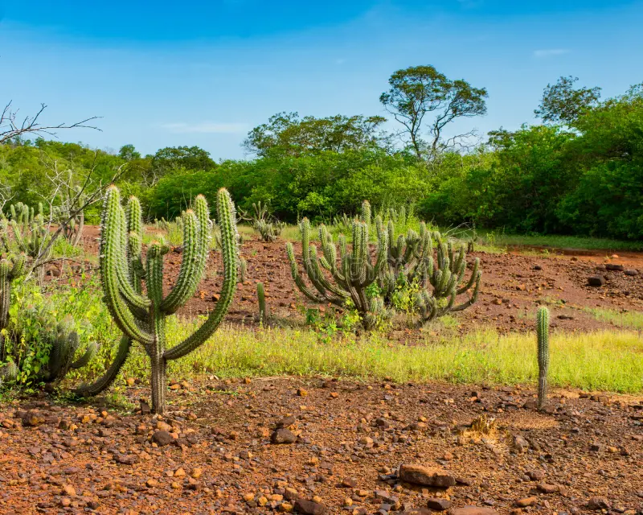

Bioma da caatinga
A vegetação da Caatinga apresenta características de adaptação ao longo período de seca e grande
diversidade de espécies vegetais, muitas delas endêmicas (desenvolvem-se apenas nessa região).
As principais características da vegetação da Caatinga é a presença de árvores baixas, troncos tortuosos
e que apresentam espinhos e folhas que caem no período da seca (com exceção de algumas espécies, como o
juazeiro).
O cair das folhas é um mecanismo para evitar a perda excessiva de água e também diminuir a ocorrência de
processos
fotossintéticos para que as plantas entrem em estágio de economia de energia. Outra característica marcante
é que
as raízes das plantas cobrem o solo para que seja possível armazenar água durante o período de chuva Algumas
espécies de cactáceas, como o mandacaru, apresentam uma característica peculiar: suas folhas são modificadas
em espinhos para evitar que a planta perca água pelo processo de transpiração. Os espinhos são também um
mecanismo
de defesa dessas plantas a fim de evitar que animais alimentem-se delas. Vale dizer também que os cactos,
que compõem
a formação vegetal desse bioma, apresentam grande capacidade de armazenamento de água. Há também plantas que
apresentam
em suas folhas uma espécie de cera para evitar a perda de água.Outra característica marcante das espécies
vegetais encontradas
na Caatinga é a capacidade de algumas plantas de realizar fotossíntese e de produzir nutrientes mesmo que
não apresentem
folhas. Isso se deve ao fato de que essas espécies possuem caule verde com células constituídas por
clorofila, que é o pigmento
responsável por captar a luz e garantir que organismos consigam produzir seu alimento por meio da
fotossíntese
Clima da Caatinga
O clima que compreende a região da Caatinga é o clima tropical semiárido. Esse clima é marcado por longos períodos de estiagem, isto é, sem chuvas. O índice pluviométrico é abaixo dos 800 mm/ano. As temperaturas são geralmente elevadas, com uma média de 27 ºC, podendo alcançar números maiores, superiores a 32 ºC. Durante o período de chuva, os índices pluviométricos podem atingir os 1000 mm/ano. Já nos períodos mais secos, há uma baixa, chegando a 200 mm/ano. O clima que compreende a região da Caatinga é o clima tropical semiárido. Esse clima é marcado por longos períodos de estiagem,isto é, sem chuvas. O índice pluviométrico é abaixo dos 800 mm/ano. As temperaturas são geralmente elevadas, com uma média de 27 ºC, podendo alcançar números maiores, superiores a 32 ºC. Durante o período de chuva, os índices pluviométricos podem atingir os 1000 mm/ano.Já nos períodos mais secos, há uma baixa, chegando a 200 mm/ano.

Fauna da Caatinga
A fauna da Caatinga é bastante diversificada, mas não tão conhecida, havendo diversas espécies de animais endêmicos. Os animais que se encontram na região abrangida por esse bioma apresentam características de adaptação ao clima, assim como as plantas, como o desenvolvimento de hábitos noturnos, comportamentos migratórios e “hibernações” (capacidade de algumas espécies de lidar com condiçõesclimáticas hostis).
Segundo o Ministério do Meio Ambiente, a Caatinga apresenta:
178 espécies de mamíferos;
591 espécies de aves;
117 espécies de répteis;
79 espécies de anfíbios;
241 espécies de peixes;
221 espécies de abelhas.
Alguns Animais da fauna:
AraraA arara-azul-de-lear, endêmica da Caatinga, vive principalmente no norte da Bahia, nidificando em rochedos e se alimentando de frutos do licuri, uma palmeira típica da região. Essa espécie,ameaçada de extinção devido à perda de habitat e caça ilegal, é crucial para a dispersão de sementes na Caatinga.Esforços de conservação, como reservas naturais e programas de reprodução, são essenciais para sua sobrevivência. 
| MacacoO macaco-prego é um primata inteligente encontrado em várias regiões do Brasil, incluindo a Amazônia, Mata Atlântica, Cerrado e Caatinga. Conhecido por sua habilidade de usar ferramentas, ele vive em grupos sociais e tem uma dieta onívora, comendo frutas, sementes e pequenos animais. Embora algumas espécies sejam comuns, outras enfrentam ameaças devido à perda de habitat e caça. 
|
|---|
Flora da Caatinga
A flora da Caatinga é bastante diversificada. O período de floração varia conforme a
região, o regime de chuvas e a qualidade dos solos. Segundo a Embrapa, a Caatinga
apresenta cerca de 1.981 espécies de plantas. Destacam-se os cactos, como o mandacaru
e o xique-xique; as bromélias, como a macambira; e as leguminosas, como a catingueira.
Características de algumas espécies da flora da Caatinga
Cumaru: espécie de planta adaptada à maior parte dos solos, especialmente
aos solos arenosos e profundos. Apresenta caules que soltam lascas finas, deixando à mostra
a camada mais nova, que possui coloração verde. Essa espécie corre risco de ser extinta devido
à grande exploração.
Ipê-roxo: espécie de planta cujo nome representa a coloração das suas flores.
Durante a sua floração, a planta perde as folhas, ficando em destaque as flores, que formam densos buquês. Devido à grande procura dessa espécie para ornamentação, dada a sua exuberância, está ameaçada de extinção.
Juazeiro: espécie de planta cujas folhas permanecem verdes no período de seca por ter
raízes que captam umidade no subsolo. É uma das poucas espécies que não perdem suas folhas durante a
estiagem. Pode atingir até 16 metros.
Macambira: espécie de bromélia que se desenvolve sob a exposição do sol. Apresenta
folhas suculentas, que são utilizadas para alimentação de gado e também para produção de farinha e pirão.
Seu talo é bastante utilizado para revestir telhados.
Devastação da Caatinga
A Caatinga é considerada uma das 37 regiões do planeta que devem ser conservadas, pois contribui para a manutenção das características climáticas locais e globais, além de apresentar grande biodiversidade. Sua preservação é fundamental, principalmente porque esse bioma é o berço de diversas nascentes que abastecem o sertão nordestino.

A região semiárida abrangida por esse bioma é a mais povoada do mundo, sendo habitat para cerca de 28 milhões de pessoas, que tiram do bioma os recursos necessários para a sua sobrevivência. Além da intensa exploração dos recursos naturais, há o aumento da expansão da fronteira agrícola para viabilizar a produção agrícola e pecuária, acarretando então o aumento do desmatamento.
Segundo o Ibama, até 2008, o desmatamento na Caatinga chegava a 45%. Dados do MapBiomas (Sistema de Monitoramento dos Biomas do Brasil) apontam que a Caatinga perdeu aproximadamente 15 milhões de hectares entre 2000 e 2020, o equivalente a 26,36% de sua área original.